"Mugraduate man nga dli fresh, importante dli depress."
Why do you choose STEM? Kay STEM major man si mingyu.
More...
"Mugraduate man nga dli fresh, importante dli depress."
Why do you choose STEM? Kay STEM major man si mingyu.
What People Around You thinks of You.
Kini sya kay gina admit nga sya daw ang asawa ni Jeonghan og wala koy laban dra kay pareha rami delulu. Ito ay walang iba kundi ang gahi nga Princess. Princess Haneyah R. Sani ng STEM.
Si sani at first kay sabaan gyud sauna pero nag ka dugay na bali man ako namay na sabaan, sya naman ang naging nonchalant. Nonchalant yarn aw HAHAHAHA.
Bitaw san, makita nako ang dedication and perseverance nimo as a student, daughter and ate. The way you respect and the way you care to your siblings, apil na diay ko ato kay ate man tika ehe😝. Bitaw sa lami kay iming handa sa imong debut HAHAHAHA. Aside from that silly jokes dapat way limtanay kay We stand with Seventeen. Og higit sa lahat walang susuko hanggat hindi mayaman kay TAMILIAN TAG SUD AN.
Person nga na close and na bond nako whole my shs journey so thankful sa dinha pa lang na part. I've seen your hair and you as a person grow gyud. You've fought so hard in this whole journey, and you really learned a lot gyud. Unta ang bond nato together kay magstrong pa till college kay part na kas akong life diko vocal about ani but naa koy na learn sa imoha gyud and makalearn pako. I feel you kay ate ka and willing mo sacrifice for the sake of others especially family matters but don't forget na we should try to enjoy our lifes pod. So sama sama tayong magsuffer sa college and ikaw/kamo akong sandalan sa tanan kay sandigan gud HAHHAHA. I'm so so proud sa imoha gurl, labbyouuu and thankkkkyouuuuuuu haneyahhhh!!!<3333
XName: Princess Haneyah R. Sani
Age: 18
Birth Date: April 13, 2006
Status: Married to Jeonghan
Sex: Female
Hobbies: Dancing, Singing, Manghapak
Skills & Tallent: Dancing, Singing
Best Friends: Rose Jean Trasona , Prencess Resheill Sumile , Gillian Didato


 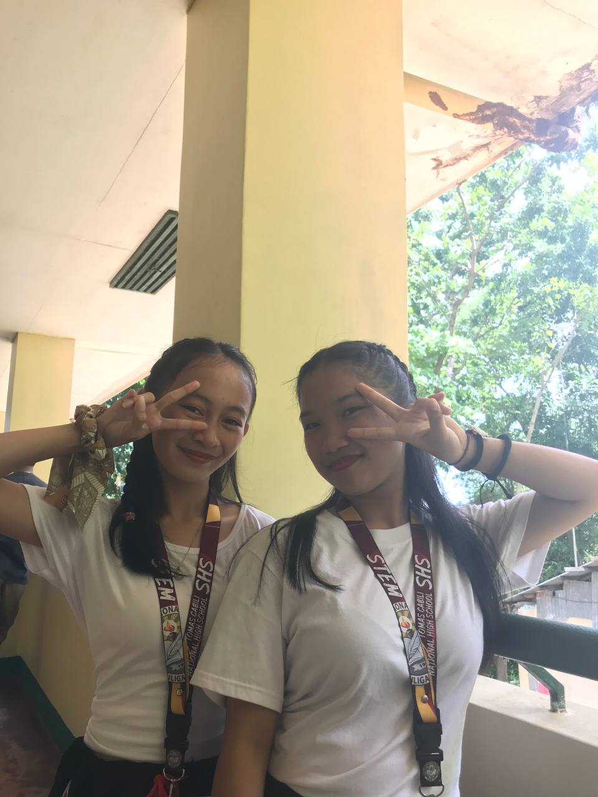
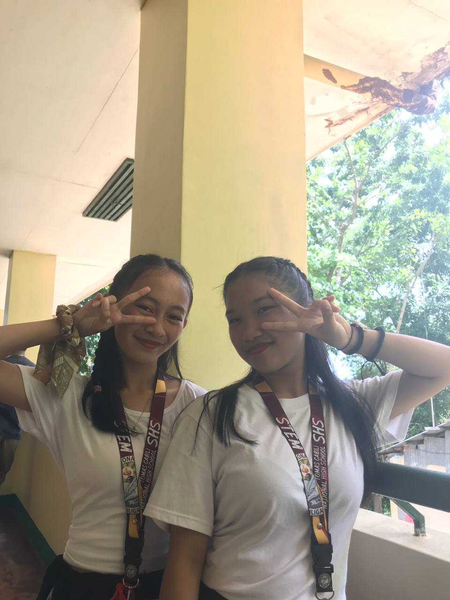
 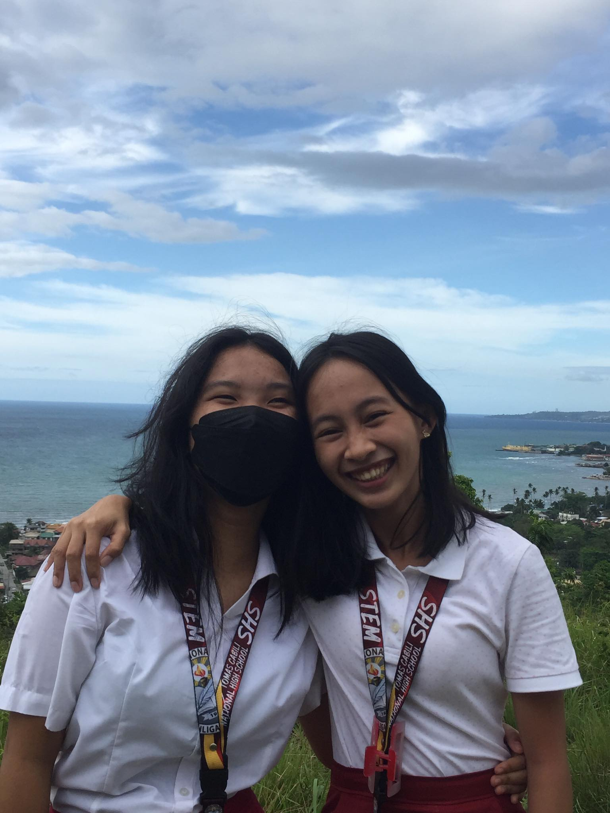
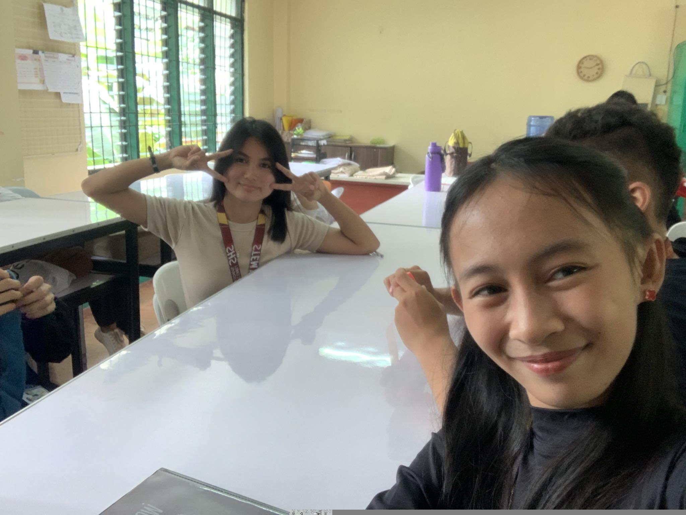
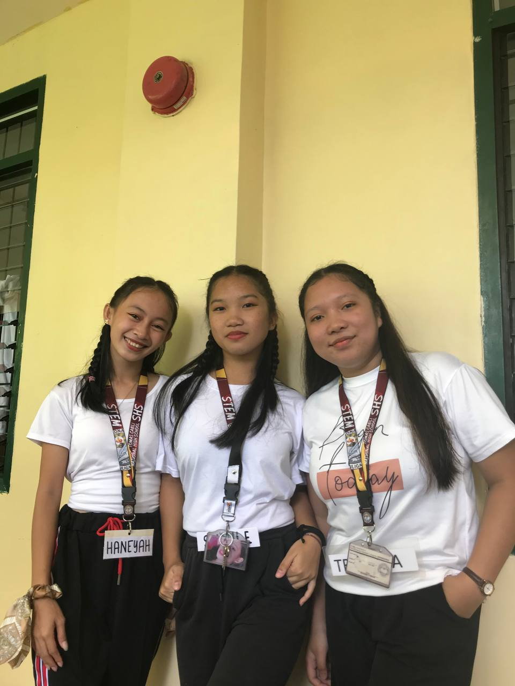
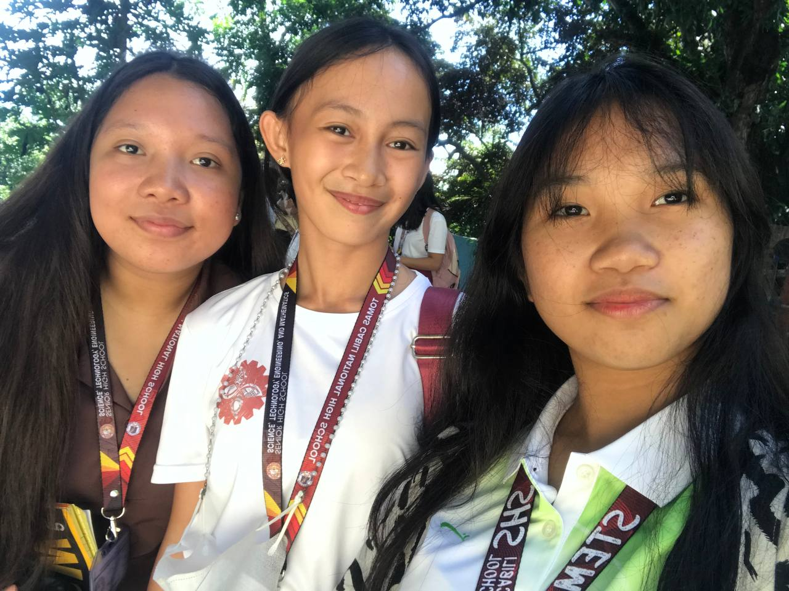
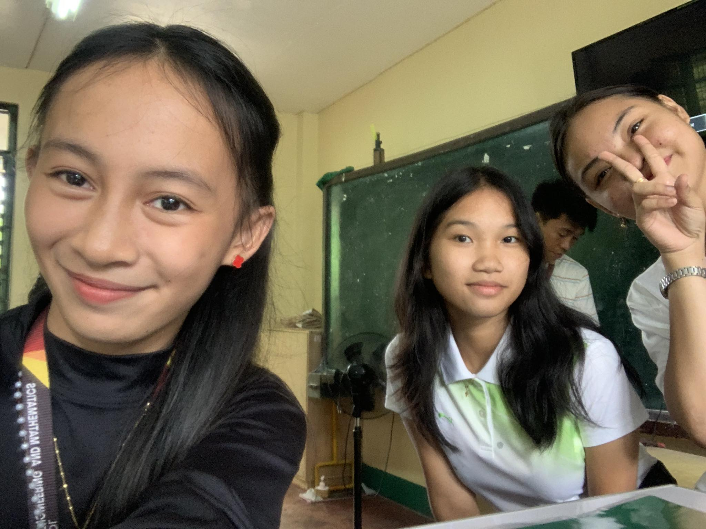
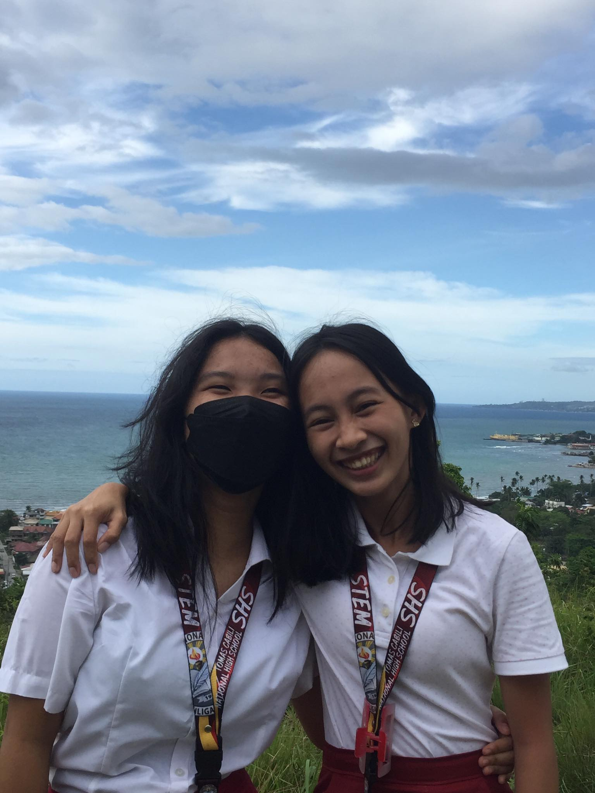
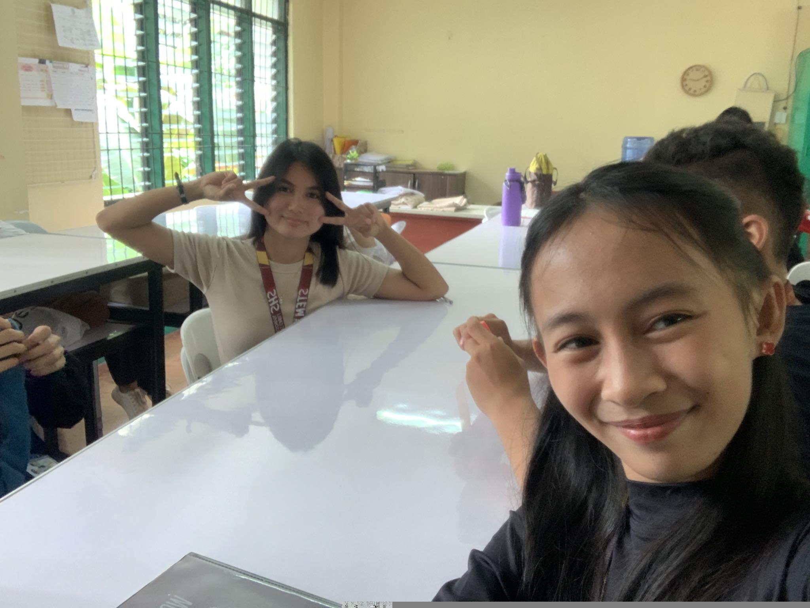
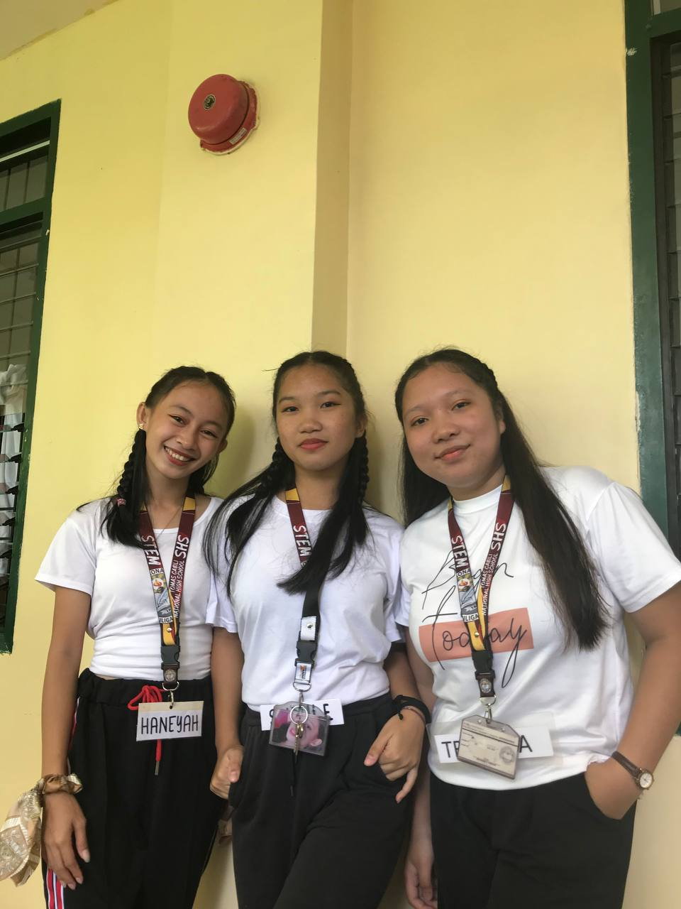
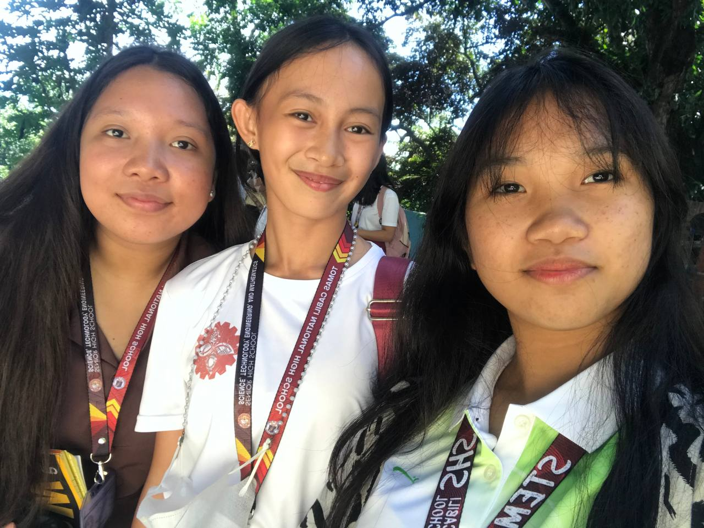
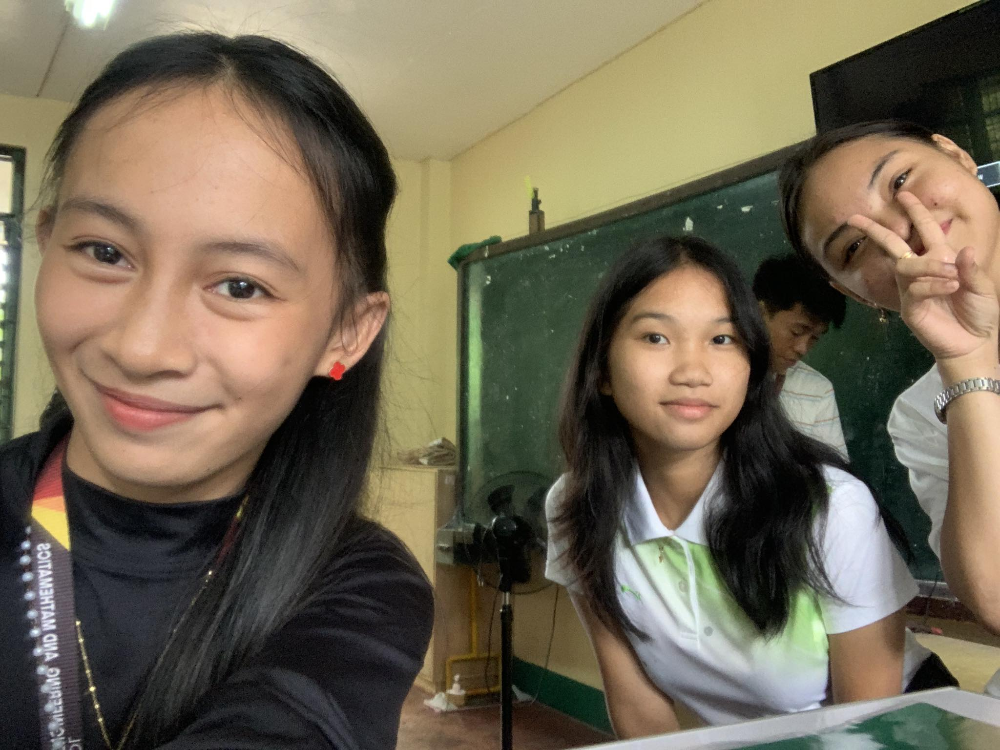